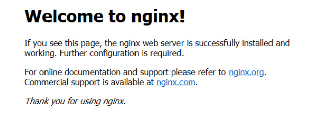

作为一个以服务器为主要市场的操作系统，主要就是对客户端的请求进行响应，进行处理的。在经历过系统镜像安装和本地配置好ssh功能后，接下来进行服务器的安装，这里我以nginx为主，介绍一下如何安装nginx和配置站点，
安装要求
- linux centos7系统
- ssh软件
nginx简介
nginx作者是伊戈尔·赛索耶夫，最初是为一个俄罗斯访问量第二大的网站开发的服务器。
nginx主要是有以下几个功能：
- 免费开源的服务器
- 轻量级的服务器，安装包只有几百KB
- 高性能的web服务器
- 反向代理服务器
- 负载均衡
- 电子邮件代理服务器
nginx国内大陆的网站用户有腾讯、百度、淘宝、网易、京东和新浪等。
nginx安装
- 添加安装包
1 | sudo rpm -Uvh http://nginx.org/packages/centos/7/noarch/RPMS/nginx-release-centos-7-0.el7.ngx.noarch.rpm |
- 安装软件包
1 | yum install -y nginx |
nginx程序启动
你可以执行nginx -v查看版本。
系统启动并且设置为开机自启动。
1 | systemctl start nginx |
由于nginx默认是80端口，所以你需要开放80端口。
1 | firewall-cmd --add-port=80/tcp --permanent |
增加一条hosts记录
打开系统hosts文件,这里就以www.example.com为例。
如果你不清楚自己的系统ip是多少，可以运行下面这个命令安装服务包。
1 | yum install -y net-tools |
就会看到自己的ip地址了。
- 首先我们进入hosts文件，
vi /etc/hosts - 然后按一下键盘上的
Insert， 输入内容127.0.0.1 www.example.com; - 最后按住键盘上的
Esc，输入:wq或者:x保存并且退出。
到游览器地址栏输入刚刚保存的网址，就可以看到一下内容。

nginx
配置一个站点
nginx的全局配置文件vi /etc/nginx/nginx.conf
接下来我会配置一个简单的静态站点作为示例。
- 创建一个文件夹用来存放站点文件。
1 | mkdir /var/www/sites |
- 新建一个网页
1 | vi /var/www/sites/index.html |
然后依照上面的文件编辑保存步骤输入内容并且保存。
这是我的网站首页内容。
1 |
|
- 添加配置文件夹和文件
进入nginx的目录下，创建一个文件夹和文件。
1 | mkdir /etc/nginx/vhost |
输入以下内容并且保存。
1 | server { |
配置完了以后重载重启nginx。
1 | systemctl reload nginx |
【技巧】这里有一个小技巧，可以检测你写的nginx配置站点文件语法是否正确，可以帮助你减少不必要的烦恼。
1 | nginx -t -c /etc/nginx/nginx.conf |
在本地hosts文件增加解析记录,这里的ip就是你远程服务器的ip地址了。
1 | 192.168.4.11 www.hello.org |
- 预览
打开游览器，输入www.hello.org或者hello.org就可以看到之前编辑的站点首页内容了。
写在最后
今天只是初步探究nginx的用法，其他的功能下次补充完善。